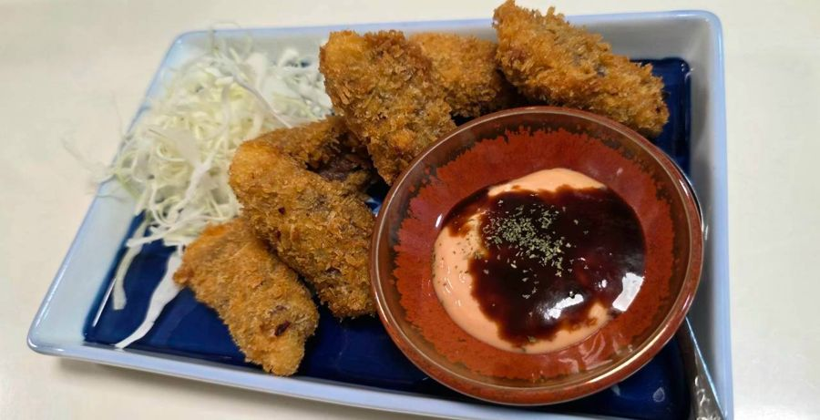
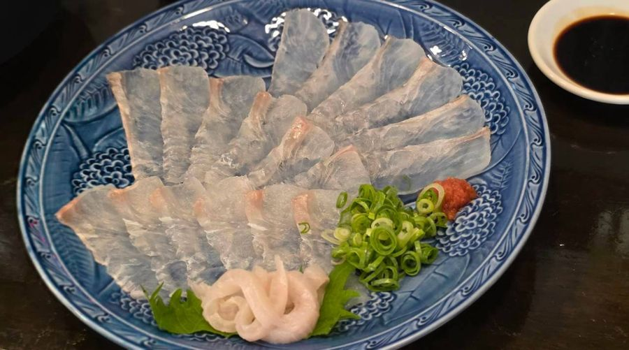

Introduction only / 完全予約制 ・ ご紹介のみ
猫
寿司を握ってきた手で、
一皿ずつ。
すし職人として魚と向き合ってきた店主が、いただいたご予約の分だけ仕入れ、仕込み、一品ずつ仕上げます。ご紹介でお越しのお客様に、気がねなく、おなかいっぱい楽しんでいただきたい。そんな思いで営むお店です。
2名様より、前日までのご予約で
ランチ・ディナー営業しております。
ご紹介のみで営業しているお店のため、住所と電話番号は掲載しておりません。
下へスクロールで、奥の間へ
報 / 00
お知らせ
- 報2026.11.05年末年始の営業について
12月31日〜1月3日は臨時休業とさせていただきます。 - 報2026.10.20秋のコースが始まりました
季節の食材を使った特別なコースをご用意しています。 - 報2026.10.01ランチのドリンク100円引き
ランチのお客様は、ドリンクが全て100円引きです。
想 / 思い
店主の思い
- 一
ご紹介の方だけを、大切に。
看板も住所も出さず、ご紹介のお客様だけをお迎えします。顔の見える関係の中で、一組ずつ丁寧に。
- 二
しっかり、おなかいっぱい。
1,000円のランチにも寿司がつきます。ディナーは「ボリューム満点」。遠慮せず、満足して帰ってほしい。
- 三
すし職人の目で、魚を。
西京焼、煮付け、ホイル焼、お造り、お寿司。魚は店主が選び、切り、焼き、煮ます。
工 / 工夫
三つの工夫
- 一
完全予約制：ご予約分だけ仕入れる。
前日までのご予約をいただくことで、必要な分だけを新鮮なうちに仕込めます。
- 二
一つのコースで、いろいろな味を。
寿司、揚げ物、焼き物、煮物、デザートまで、飽きずに楽しめる組み立てに。
- 三
コース名は動物たち。
こねこ、こぐま、うさぎ、パンダ…。選ぶところから楽しんでもらえるよう、遊び心を添えています。
壱 / 01
ランチの間
11:00 – 15:00
コース料理のみ
各コースにサラダ・お魚の西京焼・海鮮ホイル焼・茶碗蒸し・お吸い物・デザートが付きます。
※マンモス・海老フルコースには付いていません
ランチサービスドリンク全て 100円引き
-
A-1
こねこ
白身魚の香梅天
お寿司 3貫1,000円
-
A-2
こぐま 一番人気
海老マヨネーズ
お寿司 4貫1,500円
-
A-3
ね こ
真鯛の煮付け
海老マヨネーズ
お寿司 6貫2,000円
-
A-4
マンモス 4〜6名様にオススメ（シェア形式）
海鮮ニャンバーグ・和牛オムレツ・ぶりカマ焼・真鯛煮付け・チューリップ・海老マヨネーズ・うなぎ蒲焼・やさいサラダ・ごはん・お吸い物・デザート
10,000円
弐 / 02
ディナーの間
16:00 – 24:00
お席だけのご予約も大歓迎です。コース料理をご希望の場合のみ、ご予約時にご注文ください。
-
B-1
うさぎ 平日限定・2時間制
お魚の西京焼・真鯛の煮付け・海鮮ホイル焼・本マグロのカツ・海老マヨネーズ・アワビとキノコのバター焼・やさいサラダ・おにぎり・お吸い物・デザート
2,000円
-
B-2
パンダ ディナー限定・ボリューム満点
2人前〜可 ／ 土日祝も大歓迎
お造り盛合せ・真鯛の西京焼・真鯛の煮付け・海鮮ホイル焼・焼海老・白身の香梅天・本まぐろカツ・やさいサラダ・和牛焼肉・お寿司5貫・茶碗蒸し・お吸い物・デザート3,000円
参 / 03
特別の間
特別なコース
-
C-1
海老フルコース ランチ・ディナー対応
ランチの場合は予約時にご注文ください
海老マヨネーズ・海老の天ぷら・赤海老のお造り・焼海老・海老のお寿司3貫・濃厚海老みそのお味噌汁3,000円
-
C-2
猫の宴 うたげ ランチ不可・要事前注文
お造り盛合せ・和牛スタミナ湯豆腐（お鍋）・うなぎ蒲焼・海老マヨネーズ・海鮮ニャンバーグ・大きなぶりカマ・いかマヨバター焼・特大太巻寿司
10,000円
-
C-3
七福猫 ランチ不可・要事前注文
大トロお造り・あわびバター焼・うなぎ蒲焼・海老の天ぷら・焼海老・海鮮ニャンバーグ・海鮮茶碗蒸し
10,000円
肆 / 04
アラカルト
季節ごとに替わります
ディナーでは、コースのほかに一品料理もお選びいただけます。内容は季節ごとに入れ替わります。写真は一例です。

D-01 
D-02 
D-03 
D-04 
D-05 
D-06 
D-07 
D-08 
D-09
案 / 05
ご利用案内
- 休不定休です
- 時営業時間 ランチ 11:00〜15:00 ／ ディナー 16:00〜24:00
- 休臨時休業 2026年12月31日〜2027年1月3日（年末年始）
- 税価格は税込です
- 金お支払いは現金のみです
- 時ご予約・お問い合わせは 13:00〜22:00 にお願いします
戸 / 06
ご予約について
お電話の際に、下記をお伝えください。
- 来店日
- 来店時間
- ご来店人数
- お名前
- ランチの場合：コース名
- ディナーの場合：コース、またはお席だけか
ご予約お待ちしております。